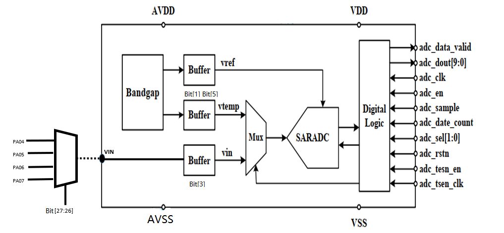
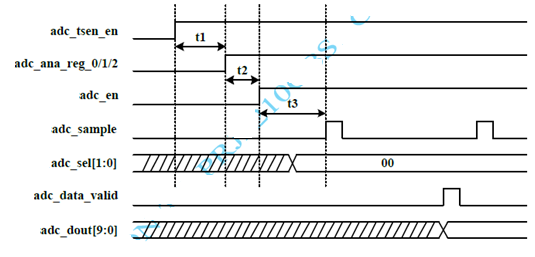
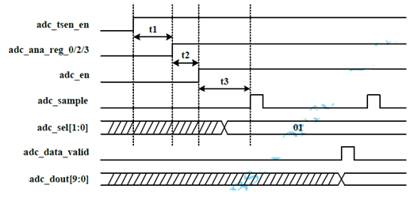
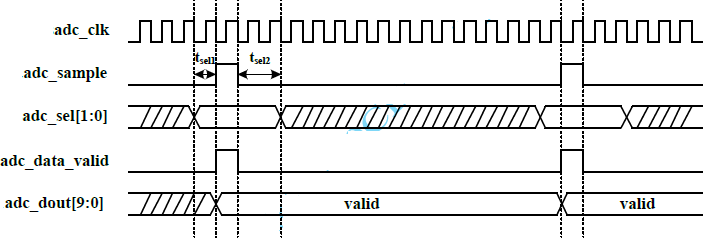

ADC
Analog to Digital Converter (ADC)
ADC Introduction

- ADC module supports temperature and voltage measurement.
- The ADC is a 10-bit successive approximation analog-to-digital converter.
- Generates a voltage varying linearly with junction temperature, -40°C to 125°C.
- The Bandgap generates Vreference and Vtemperature, which are converted into digital output by SARADC.
- ADC calculation:
VIN = dout / 1023 * Vbg- e.g. at 25°C:
VIN = (516 / 1023) * 1.208 = 0.609 V
- e.g. at 25°C:
- VIN: sample voltage input via PORT A Function 0:
- PA04: ADC0
- PA05: ADC1
- PA06: ADC2
- PA07: ADC3
ADC Main Features
Key parameters:
- Conversion rate up to 100 KS/s; each conversion costs at least 14 clock cycles.
- Conversion rate can be adjusted by changing the clock frequency or increasing the clock cycles per conversion.
- Clock frequency base: 16 MHz.
adc_tsen_clk(Bandgap clock): 8 MHz to 16 MHz.adc_clk(ADC clock): 0.2 MHz to 1.6 MHz.
DC Characteristics:
| Parameter | Symbol | Min | Typ | Max | Unit |
|---|---|---|---|---|---|
| Temperature range | — | -40 | — | 125 | °C |
| Temperature resolution | — | — | 0.6 | — | °C |
| Temperature accuracy | — | -4 | — | +4 | °C |
| Voltage reference | VBG | — | 1.208 | — | V |
| Voltage input range | VIN | 0.3 | — | 1.0 | V |
| Voltage resolution | — | — | 0.3 | — | mV |
| Voltage accuracy | — | -10 | — | +10 | mV |
| ADC resolution | — | — | 10 | — | Bit |
| Effective number of bits | ENOB | — | 9 | — | Bit |
| Differential nonlinearity | DNL | -1 | — | +1 | LSB |
| Integral nonlinearity | INL | -2 | — | +2 | LSB |
DMA: 1 RX channel.
Operation Modes
Temperature Sensor
To start the temperature sensor, the bandgap circuit, the related voltage buffers, and ADC should be enabled successively.

Voltage Measurement
To start voltage measurement, the external voltage buffer should be turned on instead of the temperature-related voltage buffer, and adc_sel[1:0] should be set to 2'b01 to select the external voltage input for ADC.

Start Timing Specification
| Parameter | Min | Typ | Max |
|---|---|---|---|
| t1 | 10 µs | — | — |
| t2 | 0 µs | — | — |
| t3 | 90 µs | — | — |
The ADC starts conversion when adc_sample goes high and requires 14 clock cycles to complete. When conversion is complete, adc_data_valid is set high at the 15th clock cycle for one clock cycle. The result adc_dout[9:0] also becomes valid at the 15th clock cycle and remains valid until the next conversion completes.

Table for Temperature Output
| Temperature | Temperature Sensor Output (Typ) |
|---|---|
| -40°C | 627 |
| -35°C | 619 |
| -30°C | 610 |
| -25°C | 601 |
| -20°C | 593 |
| -15°C | 584 |
| -10°C | 576 |
| -5°C | 568 |
| 0°C | 560 |
| 5°C | 551 |
| 10°C | 542 |
| 15°C | 534 |
| 20°C | 525 |
| 25°C | 516 |
| 30°C | 508 |
| 35°C | 500 |
| 40°C | 492 |
| 45°C | 483 |
| 50°C | 474 |
| 55°C | 466 |
| 60°C | 458 |
| 65°C | 449 |
| 70°C | 440 |
| 75°C | 432 |
| 80°C | 423 |
| 85°C | 415 |
| 90°C | 407 |
| 95°C | 398 |
| 100°C | 389 |
| 105°C | 380 |
| 110°C | 372 |
| 115°C | 363 |
| 120°C | 354 |
| 125°C | 346 |
ADC Interrupts
Each ADC module supports 1 interrupt:
s_rx_ch_events: DMA RX channel receive buffer full- NVIC IRQn: 121
ADC Registers
Base address: 0x5011_4000
| Register Name | Offset | Size | Type | Access | Default | Description |
|---|---|---|---|---|---|---|
| ADC_RX_SADDR | 0x0000 | 32 | Config | R/W | 0x00000000 | RX buffer base address configuration register |
| ADC_RX_SIZE | 0x0004 | 32 | Config | R/W | 0x00000004 | RX buffer size configuration register |
| ADC_RX_CFG | 0x0008 | 32 | Config | R/W | 0x00000000 | RX stream configuration register |
| ADC_CR_CFG | 0x0010 | 32 | Config | R/W | 0x00000000 | ADC control configuration register |
Register Descriptions
ADC_RX_SADDR — RX Buffer Base Address
- Address offset:
0x0000 - Reset value:
0x0000_0000
| Bits | Field | Access | Description |
|---|---|---|---|
[15:0] | RX_SADDR | R/W | RX buffer base address. Read: returns current buffer pointer value during transfer, else 0. Write: sets RX buffer base address. |
ADC_RX_SIZE — RX Buffer Size
- Address offset:
0x0004 - Reset value:
0x0000_0004
| Bits | Field | Access | Description |
|---|---|---|---|
| [16:0] | RX_SIZE | R/W | RX buffer size in bytes (max 1 MByte). Read: returns remaining bytes to transfer. Write: sets buffer size. |
ADC_RX_CFG — RX Stream Configuration
- Address offset:
0x0008 - Reset value:
0x0000_0000
| Bits | Field | Access | Description |
|---|---|---|---|
| [5] | PENDING | R/W | RX transfer pending status: 0 = no pending transfer, 1 = pending transfer in queue |
| [4] | EN | R/W | RX channel enable and start: 0 = disable, 1 = enable and start transfer. Also used to queue a transfer if one is already ongoing. |
| [2:1] | DATASIZE | R/W | Channel transfer size for uDMA buffer address increment. 10 (const) = +4 (32-bit) |
| [0] | CONTINOUS | R/W | Continuous mode: 0 = disabled, 1 = enabled. When enabled, the uDMA reloads the address and buffer size and starts a new transfer at the end of each buffer. |
ADC_CR_CFG — ADC Control Configuration
- Address offset:
0x0010 - Reset value:
0x0000_0000
| Bits | Field | Access | Description |
|---|---|---|---|
| [7:0] | adc_ana_control | R/W | ADC IP register configuration (see bit detail below) |
| [12:8] | adc_data_count | R/W | ADC clock cycles per sample (must be ≥ 14) |
| [13] | adc_tsen_en | R/W | Bandgap enable: 0 = disable, 1 = enable |
| [14] | adc_en | R/W | ADC enable: 0 = disable, 1 = enable |
| [15] | adc_rstn | R/W | ADC reset: 0 = default, 1 = reset |
| [23:16] | adc_clkfd | R/W | ADC clock divider (base 16 MHz). adc_clk = 16000 / adc_clkfd kHz. Must yield a frequency between 0.2–1.6 MHz. e.g. adc_clkfd = 80 → adc_clk = 200 kHz; adc_clkfd = 10 → adc_clk = 1600 kHz |
| [25:24] | adc_sel | R/W | ADC input select: 00 = temperature-related voltage, 01 = external voltage |
| [27:26] | adc_vin_sel | R/W | Analog input mux: 00 = PA04 (ADC0), 01 = PA05 (ADC1), 10 = PA06 (ADC2), 11 = PA07 (ADC3) |
adc_ana_control bit detail:
| Bit | Description |
|---|---|
| [0] | Bandgap chopper enable: 0 = disable, 1 = enable |
| [1] | Temperature-related voltage buffer: 0 = disable, 1 = enable |
| [2] | Bandgap voltage buffer: 0 = disable (use AVDD as reference), 1 = enable (use Bandgap voltage as reference) |
| [3] | External voltage buffer: 0 = disable, 1 = enable |
| [4] | Temperature-related voltage select: 0 = voltage 1, 1 = voltage 2 |
| [5] | Temperature-related voltage filter bypass: 0 = use filter, 1 = bypass filter |
| [6] | Bandgap voltage filter bypass: 0 = use filter, 1 = bypass filter |
| [7] | Reserved |